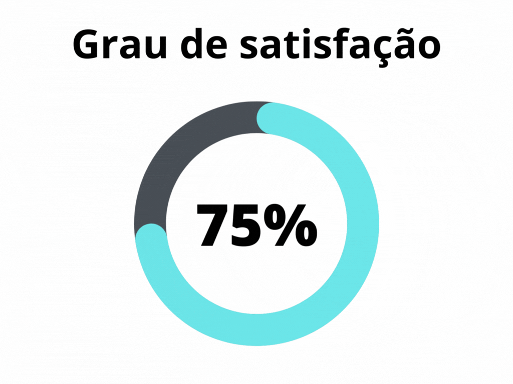

Planejamento da verificação
1. Introdução
A fase de análise de requisitos é de extrema importância para que um produto de software possua uma boa qualidade, no caso dos requisitos uma boa análise impede que erros cometidos durante a manipulação dos requisistos se alastrem para o desenvolvimento, criando grandes obstáculos nas etapas mais adiante no processo, o que pode gerar retrabalhos custosos. Na engenharia de requisitos, a análise pode ser dividida em duas áreas, verificação e validação. Enquanto a verificação atua para analisar se os documentos de requisitos estão em conformidade com os padrões do projeto, a validação busca analisar se todas as necessidades do cliente foram especificadas na forma de requisitos[3].
Este artefato detalha o planejamento da verificação para este projeto, apresentando a metodologia, estruturas e padrões que serão utilizados para verificar a estrutura do projeto realizado até então. Este documento possui como inspiração o artefato de planejamento da verificação do repositório Lichess do semestre 2022.2[5] da disciplina de Requisitos de software.
2. Metodologia
Para a verificação do projeto, será utilizado o método de inspeção. Que consiste na utilização de checklists para verificar os padrões especificados, assim como a presença correta de elementos e conceitos nos artefatos analisados. Para a elaboração do checklist, foi utilizada a proposta de Fagan[2], onde o checklist deve ponderar os erros mais comuns identificados em projetos semelhantes. Por fim, para que a verificação do projeto fosse realizada de forma correta, foi executado um teste piloto onde foi verificada a estrutura e conteúdo do projeto realizado pelo grupo 7 da disciplina[4], o qual é responsável pela análise do site da Agiel[1].
Através dos dados coletados pelo método do checklist, pode-se calcular numericamente o grau de satisfação com os padrões propostos, sendo este cálculo descrito pela fórmula presente na figura 1, a representação gráfica do grau de satisfação será realizada atráves de um anel de progresso, como o apresentado na figura 2. Além do grau de satisfação, pode-se calcular a porcentagem de ocorrência de erros, que deve ser representado em cada verificação por um gráfico de pizza, assim como o representado pela figura 3.

Figura 1: Equação para o cálculo do grau de satisfação (Fonte: Autor, 2023).
|  |  |
|---|---|
| Figura 2: Modelo de representação do grau de satisfação (Fonte: Autor, 2023). | Figura 3: Modelo de gráfico de ocorrência de erros (Fonte: Autor, 2023). |
Tabela 1: Modelos para representação gráfica (Fonte: Autor, 2023).
3. Checklist
Para a verificação de cada artefato, serão utilizados dois checklists distintos, onde um será responsável pelos parâmetros de padronização para cada artefato, sendo este idêntico para cada documento, as informações coletadas por esse checklists não entram no cálculo para o grau de satisfação. O segundo checklist será exclusivo para cada artefato, e analisará o documento de acordo com as necessidades previstas no plano de ensino da disciplina[6]. A tabela 2 abaixo, demonstra a estrutura do checklist de padronização que será utilizado. A tabela 3 detalha os elementos que a checklist de conteúdo deve conter.
Após a realização do teste piloto, foram identificados problemas na estrutura das checklists desenvolvidas anteriormente, portanto, a estrutura inicial dos checklists foi alterada para melhor se adequar às verificações. A primeira versão dos checklists se encontram no artefato de planejamento do teste piloto.
| ID | Verificação | Realizado |
|---|---|---|
| 1 | Possui ortografia correta e formal? | - |
| 2 | Possui introdução? | - |
| 3 | Possui links necessários? | - |
| 4 | As tabelas e imagens possuem legenda padronizada e chamada no texto? | - |
| 5 | As tabelas e imagens estão totalmente em português? | - |
| 6 | Possui bibliografia? | - |
| 7 | A bibliografia está em ordem alfabética? | - |
| 8 | Possui histórico de versão padronizado? | - |
| 9 | O histórico de versão possui autor(es) e revisor(es)? | - |
Tabela 2: Modelo de checklist para padronização (Fonte: Autor, 2023).
| ID | Verificação | Ocorrências | Acertos | Erros |
|---|---|---|---|---|
| USX | Descrição | Qtd. de verificações | Qtd. de acertos | Qtd. de erros |
Tabela 3: Modelo de checklist para conteúdo (Fonte: Autor, 2023).
4. Estrutura dos documentos
Os documentos referentes à verificação dos artefatos deve seguir uma estrutura pré-definida, tal estrutura pode ser encontrada abaixo:
4.1 Introdução
Nesta seção deve ser feita uma pequena introdução acerca do artefato verificado, além de conter informações sobre a versão do artefato e data da verificação.
4.2 Metodologia
Nesta seção devem ser detalhadas todas as verificações de conteúdo elaboradas, contendo uma breve descrição e critérios para a escolha da mesma, além de sua fonte.
4.3 Desenvolvimento
Nesta seção devem ser apresentadas as duas checklists de verificação do artefato preenchidas com os dados obtidos da verificação.
4.4 Resultados
Nesta seção devem ser apresentadas as representações gráficas do grau de satisfação e ocorrência de erros calculados a partir dos dados obtidos da verificação.
4.5 Problemas encontrados
Nesta seção devem ser apresentados os erros e problemas encontrados na verificação de forma detalhada. Além de propostas de correções para os problemas apresentados.
4.6 Acompanhamento
Nesta seção devem ser apresentadas as correções necessárias, além de informar quais problemas foram corrigidos.
5. Padrões do projeto
Para verificar se o projeto segue um padrão consiso em todos os seus artefatos, segue abaixo o padrão adotado para legenda, bibliografia e histórico de versão. ´
5.1 Legenda
Todas as tabelas e imagens presentes no projeto, além de serem chamadas de forma coesa pelo texto, devem possuir a legnda padronizada. Tal padrão pode ser encontrado abaixo.
Para tabelas:
<center>
Tabela X: Descrição da tabela (Fonte: Autor, XXXX).
</center>
Para imagens:
<center>
Figura X: Descrição da figura (Fonte: Autor, XXXX).
</center>
5.2 Bibliografia
A bibliografia de cada artefato deve estar em ordem alfabética e identificada com numeração crescente. Abaixo se encontra um exemplo de bibliografia
[1] Referência A
[2] Referência B
[3] Referência C
5.3 Histórico de versão
Abaixo se encontra o padrão de histórico de versão adotado no projeto.
| Versão | Data | Descrição | Autor(es) | Revisor(es) |
|---|---|---|---|---|
1.0 |
XX/XX/XX | Descrição | Autor(es) | Revisor(es) |
Tabela 4: Padrão para histórico de versão (Fonte: Autor, 2023).
6. Teste piloto
Para que a verificação fosse feita de forma correta, primeiramente foi executado um teste piloto, onde foram analisados os artefatos criados pelo grupo 7[4], na tabela 4 apresentada abaixo se encontram os artefatos que foram analisados, assim como o responsável por cada verificação.
| Artefato | Revisor |
|---|---|
| Planejamento(Escolha do site, cronograma, reuniões, ferramentas) | Felipe M. |
| Aspectos gerais(Atas de reuniões, apresentações) | Pedro Muniz |
| Processo de design | Felipe M. |
| Perfil de usuário | Pedro Muniz |
| Personas | Pedro Muniz |
| Aspectos éticos | Pedro Muniz |
| Análise de tarefas | Felipe M. |
| Metas de usabilidade | Pedro H. |
| Caract. da Plataforma | Amanda N |
| Princípios gerais de projeto | Amanda N |
| Guia de estilo | João Morbeck |
| Planejamento da avaliação - Análise de tarefas | Amanda N |
| Planejamento do relato - Análise de tarefas | Felipe M. |
| Relato - Análise de tarefas | Amanda N |
| Planejamento da avaliação - Storyboard | João Morbeck |
| Planejamento do relato - Storyboard | João Morbeck |
| Relato - Storyboard | Pedro H. |
| Planejamento da avaliação - Protótipo de papel | Pedro H. |
| Planejamento do relato - Protótipo de papel | Pedro H. |
Tabela 5: Artefatos a verificados no teste piloto (Fonte: Autor, 2023).
7. Verificação
Na tabela 6 se encontram os responsáveis pela verificação dos artefatos desenvolvidos pela equipe.
| Artefato | Responsável |
|---|---|
| Planejamento(Escolha do site, cronograma, reuniões, ferramentas) | Carlos E. |
| Aspectos gerais(Atas de reuniões, apresentações) | João M. |
| Processo de design | Pedro H. |
| Perfil de usuário | Felipe M. |
| Personas | Pedro H. |
| Aspectos éticos | Pedro M. |
| Análise de tarefas | Amanda |
| Metas de usabilidade | Pedro H. |
| Caract. da Plataforma | Felipe M. |
| Princípios gerais de projeto | Carlos E. |
| Guia de estilo | Amanda |
| Planejamento da avaliação - Análise de tarefas | Carlos E. |
| Planejamento do relato - Análise de tarefas | Amanda |
| Relato - Análise de tarefas | Carlos E. |
| Planejamento da avaliação - Storyboard | Carlos E. |
| Planejamento do relato - Storyboard | Felipe M. |
| Relato - Storyboard | Felipe M, |
| Planejamento da avaliação - Protótipo de papel | Pedro H. |
| Planejamento do relato - Protótipo de papel | Felipe M. |
| Relato - Protótipo de papel | Amanda |
| Planejamento da avaliação - Protótipo de alta fidelidade | Pedro H. |
| Planejamento do relato - Protótipo de alta fidelidade | Amanda |
Tabela 6: Artefatos a verificados no teste piloto (Fonte: Autor, 2023).
8. Referências Bibliográficas
[1] Agiel, acesso em: 1 de junho de 2023. Para mais informações acesse: https://www.agiel.com.br/site/
[2] Gerência e Qualidade de Software - Aula 06 - Técnica de revisão – UNIVESP
[3] REINEHR, Sheila. Engenharia de Requisitos. Porto Alegre: Sagah, 2020.
[4] Repositório Agiel do semestre 2023.1, acesso em: 1 de junho de 2023. Para mais informações acesse: https://interacao-humano-computador.github.io/2023.1-Agiel/
[5] Repositório Lichess do semestre 2022.2, acesso em: 1 de junho de 2023. Para mais informações acesse: https://github.com/Requisitos-de-Software/2022.2-Lichess
[6] SALES, André Barros. Plano de ensino da disciplina. Disponível em: https://aprender3.unb.br/pluginfile.php/2523360/mod_resource/content/33/Plano_de_Ensino%20FIHC%20202301%20Turma%202.pdf. Acesso em: 1 de junho de 2023;
9. Histórico de versão
| Versão | Data | Descrição | Autor(es) | Revisor(es) |
|---|---|---|---|---|
1.0 |
15/06/23 | Criação da página de planejamento da verificação | Pedro Muniz | Carlos eduardo |